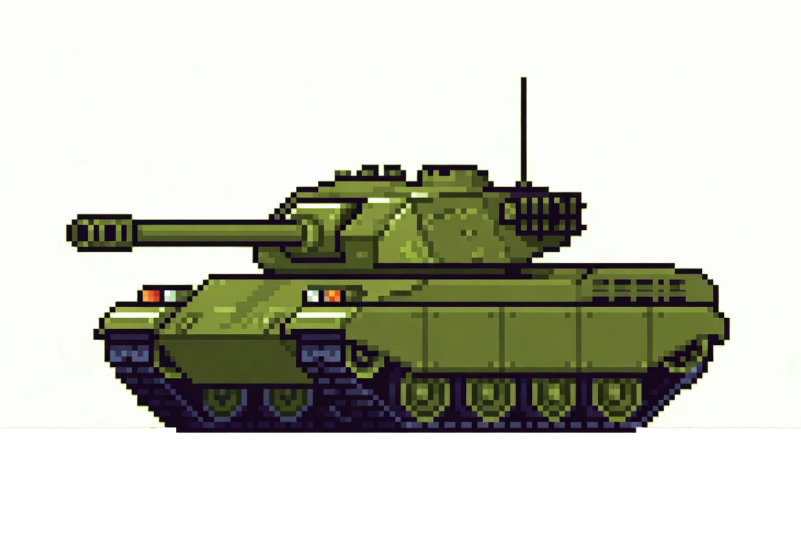
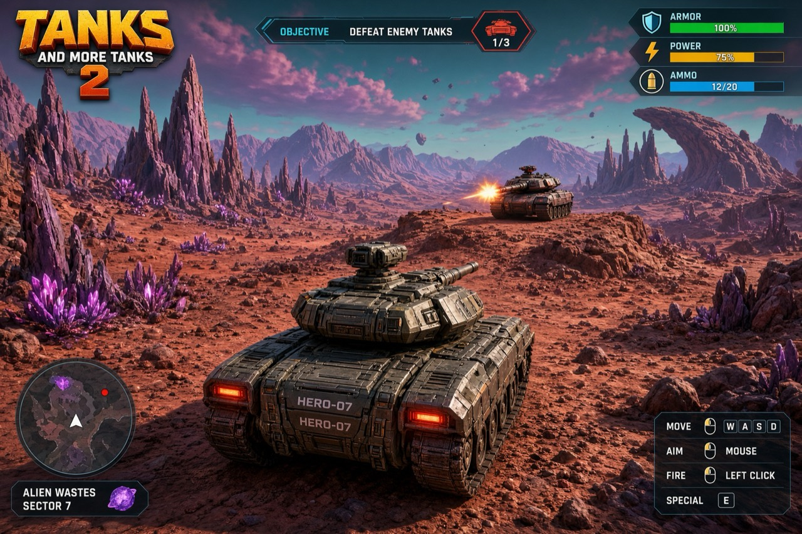

Pick your battlefield.
Three independent games, each with its own controls. The original is preserved; V2 and V3 are developing builds.
Choose an edition

Tanks and More Tanks
The original turn-based artillery game, preserved at its own address with its own gameplay and controls.
Play the original
Tanks and More Tanks II: Warfront
A separate side-view artillery rebuild with a broader battlefield, planned scenes, destructible terrain, and distinct weapon effects.
Try the V2 field test
Crater Basin — Tanks V3
A separate real-time 3D prototype focused on driving, aiming, pickups, and tank combat across an explorable arena.
Try the V3 sandbox